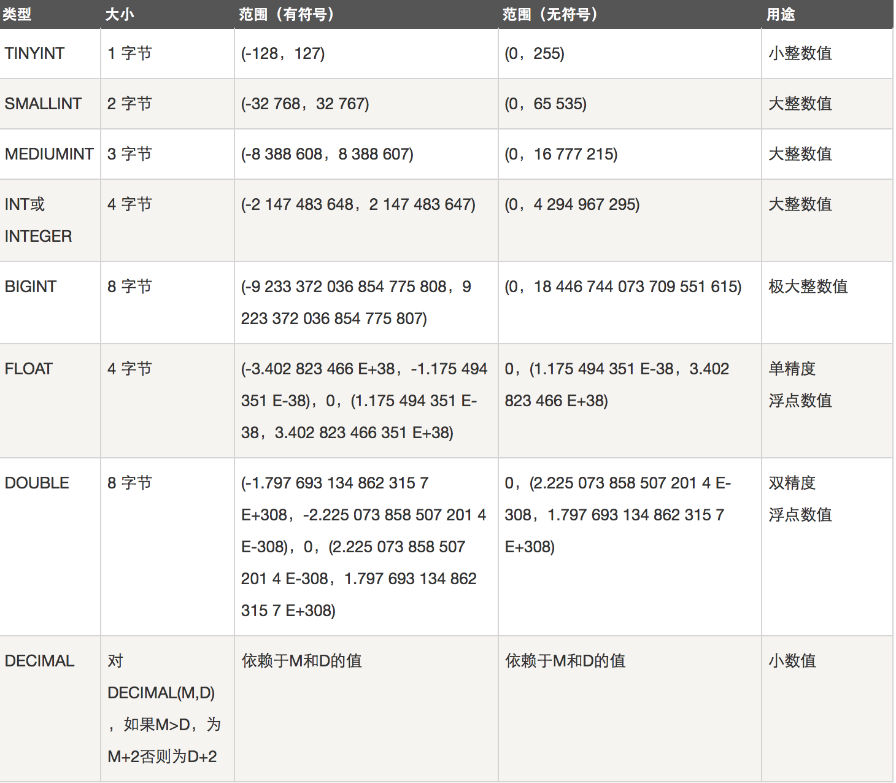
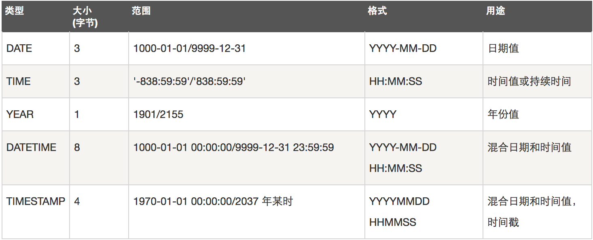
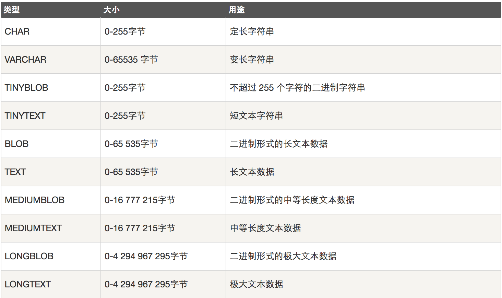

原文连接:https://www.cnblogs.com/hackerer/p/11588717.html
数据库的简介
数据库
数据库（database，DB）是指长期存储在计算机内的，有组织，可共享的数据的集合。数据库中的数据按一定的数学模型组织、描述和存储，具有较小的冗余，较高的数据独立性和易扩展性，并可为各种用户共享。
数据库管理系统软件
数据库管理系统(Database Management System)是一种操纵和管理数据库的大型软件，用于建立、使用和维护数据库，简称DBMS。它对数据库进行统一的管理和控制，以保证数据库的安全性和完整性。用户通过DBMS访问数据库中的数据，数据库管理员也通过dbms进行数据库的维护工作。它可使多个应用程序和用户用不同的方法在同时或不同时刻去建立，修改和询问数据库。大部分DBMS提供数据定义语言DDL（Data Definition Language）和数据操作语言DML（Data Manipulation Language），供用户定义数据库的模式结构与权限约束，实现对数据的追加、删除等操作。
数据库管理系统是数据库系统的核心，是管理数据库的软件。数据库管理系统就是实现把用户意义下抽象的逻辑数据处理，转换成为计算机中具体的物理数据处理的软件。有了数据库管理系统，用户就可以在抽象意义下处理数据，而不必顾及这些数据在计算机中的布局和物理位置。
常见的数据库管理软件：甲骨文的oracle,IBM的db2，sql server, Access,Mysql(开源，免费，跨平台).
数据库系统
数据库系统DBS（Data Base System，简称DBS）通常由软件、数据库和数据管理员组成。其软件主要包括操作系统、各种宿主语言、实用程序以及数据库管理系统。数据库由数据库管理系统统一管理，数据的插入、修改和检索均要通过数据库管理系统进行。数据管理员负责创建、监控和维护整个数据库，使数据能被任何有权使用的人有效使用。

mysql
mysql的管理
安装
linux:
--yum -y install mariadb mariadb-server
OR
--yum -y install mysql mysql-serverwin:
--http://dev.mysql.com/downloads/mysql/ 启动
--service mysqld start #开启
--chkconfig mysqld on #设置开机自启
OR
--systemctl start mariadb
--systemctl enable mariadb查看
-- ps aux |grep mysqld #查看进程
-- netstat -an |grep 3306 #查看端口设置密码
-- mysqladmin -uroot password '123' #设置初始密码，初始密码为空因此-p选项没有用
-- mysqladmin -u root -p123 password '1234' #修改root用户密码登录
-- mysql #本地登录，默认用户root，空密码，用户为root@127.0.0.1
-- mysql -uroot -p1234 #本地登录，指定用户名和密码，用户为root@127.0.0.1
-- mysql -uroot -p1234 -h 192.168.31.95 #远程登录，用户为root@192.168.31.95mysql的常用命令
--
-- 启动mysql服务与停止mysql服务命令：
--
-- net start mysql
-- net stop mysql
--
--
-- 登陆与退出命令：
--
-- mysql －h 服务器IP -P 端口号 -u 用户名 -p 密码 －－prompt 命令提示符 －－delimiter 指定分隔符
-- mysql －h 127.0.0.1 -P 3306 -uroot -p123
-- quit------exit----\q;
--
--
-- \s; ------my.ini文件：[mysql] default-character-set=gbk [mysqld] character-set-server=gbk
--
-- prompt 命令提示符（\D:当前日期 \d:当前数据库 \u:当前用户）
--
-- \T(开始日志) \t(结束日志)
--
-- show warnings;
--
-- help() ? \h
--
-- \G；
--
-- select now();
-- select version();
-- select user;
--
-- \c 取消命令
--
-- delimiter 指定分隔符
忘记密码怎么办？
方法1：启动mysql时，跳过授权表
[root@controller ~]# service mysqld stop
[root@controller ~]# mysqld_safe --skip-grant-table &
[root@controller ~]# mysql
mysql> select user,host,password from mysql.user;
+----------+-----------------------+-------------------------------------------+
| user | host | password |
+----------+-----------------------+-------------------------------------------+
| root | localhost | *A4B6157319038724E3560894F7F932C8886EBFCF |
| root | localhost.localdomain | |
| root | 127.0.0.1 | |
| root | ::1 | |
| | localhost | |
| | localhost.localdomain | |
| root | % | *23AE809DDACAF96AF0FD78ED04B6A265E05AA257 |
+----------+-----------------------+-------------------------------------------+
mysql> update mysql.user set password=password("123") where user="root" and host="localhost";
mysql> flush privileges;
mysql> exit
[root@controller ~]# service mysqld restart
[root@controller ~]# mysql -uroot -p123
方法2(删库):
删除与权限相关的库mysql，所有的授权信息都丢失，主要用于测试数据库或者刚刚建库不久没有授权数据的情况（从删库到跑路）
[root@controller ~]# rm -rf /var/lib/mysql/mysql
[root@controller ~]# service mysqld restart
[root@controller ~]# mysqlsql及其规范
sql是Structured Query Language(结构化查询语言)的缩写。SQL是专为数据库而建立的操作命令集，是一种功能齐全的数据库语言。
在使用它时，只需要发出“做什么”的命令，“怎么做”是不用使用者考虑的。SQL功能强大、简单易学、使用方便，已经成为了数据库操作的基础，并且现在几乎所有的数据库均支持sql。
<1> 在数据库系统中，SQL语句不区分大小写(建议用大写) 。但字符串常量区分大小写。建议命令大写，表名库名小写；
<2> SQL语句可单行或多行书写，以“;”结尾。关键词不能跨多行或简写。
<3> 用空格和缩进来提高语句的可读性。子句通常位于独立行，便于编辑，提高可读性。
SELECT * FROM tb_table
WHERE NAME="SIMON";<4> 注释：单行注释：--
多行注释：/*......*/
<5>sql语句可以折行操作
<6> DDL,DML和DCL
-- --SQL中 DML、DDL、DCL区别 .
--
--
-- -- DML（data manipulation language）：
-- 它们是SELECT、UPDATE、INSERT、DELETE，就象它的名字一样，这4条命令是用来对数据库里的
-- 数据进行操作的语言
--
-- -- DDL（data definition language）：
-- DDL比DML要多，主要的命令有CREATE、ALTER、DROP等，DDL主要是用在定义或改变表（TABLE）
-- 的结构，数据类型，表之间的链接和约束等初始化工作上，他们大多在建立表时使用
--
-- -- DCL（Data Control Language）：
-- 是数据库控制功能。是用来设置或更改数据库用户或角色权限的语句，包括（grant,deny,revoke等）
-- 语句。在默认状态下，只有sysadmin,dbcreator,db_owner或db_securityadmin等人员才有权
-- 力执行DCL数据库操作(DDL)
-- 1.创建数据库（在磁盘上创建一个对应的文件夹）
create database [if not exists] db_name [character set xxx]
-- 2.查看数据库
show databases;查看所有数据库
show create database db_name; 查看数据库的创建方式
-- 3.修改数据库
alter database db_name [character set xxx]
-- 4.删除数据库
drop database [if exists] db_name;
-- 5.使用数据库
切换数据库 use db_name; -- 注意：进入到某个数据库后没办法再退回之前状态，但可以通过use进行切换
查看当前使用的数据库 select database();mysql数据类型
MySQL支持多种类型，大致可以分为三类：数值、日期/时间和字符串(字符)类型。
数值类型
下面的表显示了需要的每个整数类型的存储和范围。

日期和时间类型
表示时间值的日期和时间类型为DATETIME、DATE、TIMESTAMP、TIME和YEAR。
每个时间类型有一个有效值范围和一个"零"值，当指定不合法的MySQL不能表示的值时使用"零"值。

字符串类型
字符串类型指CHAR、VARCHAR、BINARY、VARBINARY、BLOB、TEXT、ENUM和SET。该节描述了这些类型如何工作以及如何在查询中使用这些类型。

CHAR和VARCHAR类型类似，但它们保存和检索的方式不同。它们的最大长度和是否尾部空格被保留等方面也不同。在存储或检索过程中不进行大小写转换。
BINARY和VARBINARY类类似于CHAR和VARCHAR，不同的是它们包含二进制字符串而不要非二进制字符串。也就是说，它们包含字节字符串而不是字符字符串。
BLOB是一个二进制大对象，可以容纳可变数量的数据。有4种BLOB类型：TINYBLOB、BLOB、MEDIUMBLOB和LONGBLOB。它们只是可容纳值的最大长度不同。
有4种TEXT类型：TINYTEXT、TEXT、MEDIUMTEXT和LONGTEXT。这些对应4种BLOB类型，有相同的最大长度和存储需求。
数据表操作
基础操作
-- 1.创建表（类似于一个excel表）
create table tab_name(
field1 type[完整性约束条件],
field2 type,
...
fieldn type
)[character set xxx];
-- 创建一个员工表employee
create table employee(
id int primary key auto_increment ,
name varchar(20),
gender bit default 1, -- gender char(1) default 1 ----- 或者 TINYINT(1)
birthday date,
entry_date date,
job varchar(20),
salary double(4,2) unsigned,
resume text -- 注意，这里作为最后一个字段不加逗号
);
/* 约束:
primary key (非空且唯一) :能够唯一区分出当前记录的字段称为主键！
unique
not null
auto_increment 主键字段必须是数字类型。
外键约束 foreign key */
-- 2.查看表信息
desc tab_name 查看表结构
show columns from tab_name 查看表结构
show tables 查看当前数据库中的所有的表
show create table tab_name 查看当前数据库表建表语句
-- 3.修改表结构
-- (1)增加列(字段)
alter table tab_name add [column] 列名 类型［完整性约束条件］［first｜after 字段名］;
alter table user add addr varchar(20) not null unique first/after username;
#添加多个字段
alter table users2
add addr varchar(20),
add age int first,
add birth varchar(20) after name;
-- (2)修改一列类型
alter table tab_name modify 列名 类型 [完整性约束条件]［first｜after 字段名］;
alter table users2 modify age tinyint default 20;
alter table users2 modify age int after id;
-- (3)修改列名
alter table tab_name change [column] 列名 新列名 类型 [完整性约束条件]［first｜after 字段名］;
alter table users2 change age Age int default 28 first;
-- (4)删除一列
alter table tab_name drop [column] 列名;
-- 思考：删除多列呢？删一个填一个呢？
alter table users2
add salary float(6,2) unsigned not null after name,
drop addr;
-- (5)修改表名
rename table 表名 to 新表名;
-- (6)修该表所用的字符集
alter table student character set utf8;
-- 4.删除表
drop table tab_name;
---5 添加主键，删除主键
alter table tab_name add primary key(字段名称,...)
alter table users drop primary key;
eg:
mysql> create table test5(num int auto_increment);
ERROR 1075 (42000): Incorrect table definition; there can be only one auto column and it must be defined as a key
create table test(num int primary key auto_increment);
-- 思考，如何删除主键？
alter table test modify id int; -- auto_increment没了，但这样写主键依然存在，所以还要加上下面这句
alter table test drop primary key;-- 仅仅用这句也无法直接删除主键
-- 唯一索引
alter table tab_name add unique [index|key] [索引名称](字段名称,...)
alter table users add unique(name)-- 索引值默认为字段名show create table users;
alter table users add unique key user_name(name);-- 索引值为user_name
-- 添加联合索引
alter table users add unique index name_age(name,age);#show create table users;
-- 删除唯一索引
alter table tab_name drop {index|key} index_name创建文章表
create table article(
id int primary key auto_increment ,
title varchar(20),
publish_date INT,
click_num INT,
is_top TINYINT(1),
content TEXT
);完整性约束条件之主键约束
单字段主键
主键字段特点：非空且唯一
create table users(
id INT primary key,
name varchar(20),
city varchar(20)
);多字段联合主键
create table users2(
id INT,
name varchar(20),
city varchar(20),
primary key(name,id)
);<1> 一张表只能有一个主键
<2> 主键类型不一定非是整型
表纪录操作
表纪录之增，删，改
-- 1.增加一条记录insert
/*insert ［into］ tab_name (field1,filed2,.......) values (value1,value2,.......);*/
create table employee_new(
id int primary key auto_increment,
name varchar(20) not null unique,
birthday varchar(20),
salary float(7,2)
);
insert into employee_new (id,name,birthday,salary) values
(1,'simon','1990-09-09',9000);
insert into employee_new values
(2,'alex','1989-08-08',3000);
insert into employee_new (name,salary) values
('xialv',1000);
-- 插入多条数据
insert into employee_new values
(4,'alvin1','1993-04-20',3000),
(5,'alvin2','1995-05-12',5000);
-- set插入: insert ［into］ tab_name set 字段名=值
insert into employee_new set id=12,name="alvin3";
-- 2.修改表记录 update tab_name set field1=value1,field2=value2,......[where 语句]
/* UPDATE语法可以用新值更新原有表行中的各列。
SET子句指示要修改哪些列和要给予哪些值。
WHERE子句指定应更新哪些行。如没有WHERE子句，则更新所有的行。*/
update employee_new set birthday="1989-10-24" WHERE id=1;
--- 将simon的薪水在原有基础上增加1000元。
update employee_new set salary=salary+4000 where name='simon';
-- 3.删除表纪录
delete from tab_name [where ....]
/* 如果不跟where语句则删除整张表中的数据
delete只能用来删除一行记录
delete语句只能删除表中的内容，不能删除表本身，想要删除表，用drop
TRUNCATE TABLE也可以删除表中的所有数据，词语句首先摧毁表，再新建表。此种方式删除的数据不能在
事务中恢复。*/
-- 删除表中名称为’alex’的记录。
delete from employee_new where name='alex';
-- 删除表中所有记录。
delete from employee_new;-- 注意auto_increment没有被重置:alter table employee auto_increment=1;
-- 使用truncate删除表中记录。
truncate table emp_new;思考：
<1> 存储时间用varchar可不可以呢？它与date数据类型又有什么区别呢？
<2> 表中数据三条，id分别为1，2，3，突然插入一个id＝7，那么下次作为主键的字增长的id会从几开始增长呢？(从7开始)
表纪录之查(单表查询)
-- 查询表达式
SELECT *|field1,filed2 ... FROM tab_name
WHERE 条件
GROUP BY field
HAVING 筛选
ORDER BY field
LIMIT 限制条数
---准备表
CREATE TABLE ExamResult(
id INT PRIMARY KEY auto_increment,
name VARCHAR (20),
JS DOUBLE ,
Django DOUBLE ,
OpenStack DOUBLE
);
INSERT INTO ExamResult VALUES (1,"simon",98,98,98),
(2,"xialv",35,98,67),
(3,"alex",59,59,62),
(4,"wusir",88,89,82),
(5,"alvin",88,98,67),
(6,"simon",86,100,55);
-- （1）select [distinct] *|field1，field2，...... from tab_name
-- 其中from指定从哪张表筛选，*表示查找所有列，也可以指定一个列
-- 表明确指定要查找的列，distinct用来剔除重复行。
-- 查询表中所有学生的信息。
select * from ExamResult;
-- 查询表中所有学生的姓名和对应的英语成绩。
select name,JS from ExamResult;
-- 过滤表中重复数据。
select distinct JS ,name from ExamResult;
-- （2）select 也可以使用表达式，并且可以使用: 字段 as 别名或者:字段 别名
-- 在所有学生分数上加10分特长分显示。
select name,JS+10,Django+10,OpenStack+10 from ExamResult;
-- 统计每个学生的总分。
select name,JS+Django+OpenStack from ExamResult;
-- 使用别名表示学生总分。
select name as 姓名,JS+Django+OpenStack as 总成绩 from ExamResult;
select name,JS+Django+OpenStack 总成绩 from ExamResult;
select name JS from ExamResult; -- what will happen?---->记得加逗号
-- （3）使用where子句，进行过滤查询。
-- 查询姓名为XXX的学生成绩
select * from ExamResult where name='simon';
-- 查询英语成绩大于90分的同学
select id,name,JS from ExamResult where JS>90;
-- 查询总分大于200分的所有同学
select name,JS+Django+OpenStack as 总成绩 from
ExamResult where JS+Django+OpenStack>200 ;
-- where字句中可以使用：
-- 比较运算符：
> < >= <= <> !=
between 80 and 100 值在10到20之间
in(80,90,100) 值是10或20或30
like 'simon%'
/*
pattern可以是%或者_，
如果是%则表示任意多字符，此例如唐僧,唐国强
如果是_则表示一个字符唐_，只有唐僧符合。两个_则表示两个字符：__
*/
-- 逻辑运算符
在多个条件直接可以使用逻辑运算符 and or not
-- 练习
-- 查询JS分数在 70－100之间的同学。
select name ,JS from ExamResult where JS between 80 and 100;
-- 查询Django分数为75,76,77的同学。
select name ,Django from ExamResult where Django in (75,98,77);
-- 查询所有姓王的学生成绩。
select * from ExamResult where name like '王%';
-- 查询JS分>90，Django分>90的同学。
select id,name from ExamResult where JS>90 and Django >90;
-- 查找缺考数学的学生的姓名
select name from ExamResult where Database is null;
-- （4）Order by 指定排序的列，排序的列即可是表中的列名，也可以是select 语句后指定的别名。
-- select *|field1,field2... from tab_name order by field [Asc|Desc]
-- Asc 升序、Desc 降序，其中asc为默认值 ORDER BY 子句应位于SELECT语句的结尾。
-- 练习：
-- 对JS成绩排序后输出。
select * from ExamResult order by JS;
-- 对总分排序按从高到低的顺序输出
select name ,(ifnull(JS,0)+ifnull(Django,0)+ifnull(Database,0))
总成绩 from ExamResult order by 总成绩 desc;
-- 对姓李的学生成绩排序输出
select name ,(ifnull(JS,0)+ifnull(Django,0)+ifnull(OpenStack,0))
总成绩 from ExamResult where name like 'a%'
order by 总成绩 desc;
-- （5）group by 分组查询：
CREATE TABLE order_menu(
id INT PRIMARY KEY auto_increment,
product_name VARCHAR (20),
price FLOAT(6,2),
born_date DATE,
class VARCHAR (20)
);
INSERT INTO order_menu (product_name,price,born_date,class) VALUES
("苹果",20,20170612,"水果"),
("香蕉",80,20170602,"水果"),
("水壶",120,20170612,"电器"),
("被罩",70,20170612,"床上用品"),
("音响",420,20170612,"电器"),
("床单",55,20170612,"床上用品"),
("草莓",34,20170612,"水果");
-- 注意,按分组条件分组后每一组只会显示第一条记录
-- group by字句，其后可以接多个列名，也可以跟having子句,对group by 的结果进行筛选。
-- 按位置字段筛选
select * from order_menu group by 5;
-- 练习：对购物表按类名分组后显示每一组商品的价格总和
select class,SUM(price)from order_menu group by class;
-- 练习：对购物表按类名分组后显示每一组商品价格总和超过150的商品
select class,SUM(price)from order_menu group by class
HAVING SUM(price)>150;
/*
having 和 where两者都可以对查询结果进行进一步的过滤，差别有：
<1>where语句只能用在分组之前的筛选，having可以用在分组之后的筛选；
<2>使用where语句的地方都可以用having进行替换
<3>having中可以用聚合函数，where中就不行。
*/
-- GROUP_CONCAT() 函数
SELECT id,GROUP_CONCAT(name),GROUP_CONCAT(JS) from ExamResult GROUP BY id;
-- （6）聚合函数： 先不要管聚合函数要干嘛，先把要求的内容查出来再包上聚合函数即可。
-- (一般和分组查询配合使用)
--<1> 统计表中所有记录
-- COUNT(列名)：统计行的个数
-- 统计一个班级共有多少学生？先查出所有的学生，再用count包上
select count(*) from ExamResult;
-- 统计JS成绩大于70的学生有多少个？
select count(JS) from ExamResult where JS>70;
-- 统计总分大于280的人数有多少？
select count(name) from ExamResult
where (ifnull(JS,0)+ifnull(Django,0)+ifnull(OpenStack,0))>280;
-- 注意:count(*)统计所有行; count(字段)不统计null值.
-- SUM(列名)：统计满足条件的行的内容和
-- 统计一个班级JS总成绩？先查出所有的JS成绩，再用sum包上
select JS as JS总成绩 from ExamResult;
select sum(JS) as JS总成绩 from ExamResult;
-- 统计一个班级各科分别的总成绩
select sum(JS) as JS总成绩,
sum(Django) as Django总成绩,
sum(OpenStack) as OpenStack from ExamResult;
-- 统计一个班级各科的成绩总和
select sum(ifnull(JS,0)+ifnull(Django,0)+ifnull(Database,0))
as 总成绩 from ExamResult;
-- 统计一个班级JS成绩平均分
select sum(JS)/count(*) from ExamResult ;
-- 注意：sum仅对数值起作用，否则会报错。
-- AVG(列名)：
-- 求一个班级JS平均分？先查出所有的JS分，然后用avg包上。
select avg(ifnull(JS,0)) from ExamResult;
-- 求一个班级总分平均分
select avg((ifnull(JS,0)+ifnull(Django,0)+ifnull(Database,0)))
from ExamResult ;
-- Max、Min
-- 求班级最高分和最低分（数值范围在统计中特别有用）
select Max((ifnull(JS,0)+ifnull(Django,0)+ifnull(OpenStack,0)))
最高分 from ExamResult;
select Min((ifnull(JS,0)+ifnull(Django,0)+ifnull(OpenStack,0)))
最低分 from ExamResult;
-- 求购物表中单价最高的商品名称及价格
---SELECT id, MAX(price) FROM order_menu;--id和最高价商品是一个商品吗?
SELECT MAX(price) FROM order_menu;
-- 注意：null 和所有的数计算都是null，所以需要用ifnull将null转换为0！
-- -----ifnull(JS,0)
-- with rollup的使用
--<2> 统计分组后的组记录
-- （7） 重点：Select from where group by having order by
-- Mysql在执行sql语句时的执行顺序：
-- from where select group by having order by
-- 分析:
select JS as JS成绩 from ExamResult where JS成绩 >70; ---- 不成功
select JS as JS成绩 from ExamResult having JS成绩 >90; --- 成功
-- (8) limit
SELECT * from ExamResult limit 1;
SELECT * from ExamResult limit 2,5;--跳过前两条显示接下来的五条纪录
SELECT * from ExamResult limit 2,2;
--- (9) 使用正则表达式查询
SELECT * FROM employee WHERE emp_name REGEXP '^yu';
SELECT * FROM employee WHERE emp_name REGEXP 'yun$';
SELECT * FROM employee WHERE emp_name REGEXP 'm{2}';外键约束
创建外键
--- 每一个班主任会对应多个学生 , 而每个学生只能对应一个班主任
----主表
CREATE TABLE ClassCharger(
id TINYINT PRIMARY KEY auto_increment,
name VARCHAR (20),
age INT ,
is_marriged boolean -- show create table ClassCharger: tinyint(1)
);
INSERT INTO ClassCharger (name,age,is_marriged) VALUES ("冰冰",12,0),
("丹丹",14,0),
("歪歪",22,0),
("姗姗",20,0),
("小雨",21,0);
----子表
CREATE TABLE Student(
id INT PRIMARY KEY auto_increment,
name VARCHAR (20),
charger_id TINYINT, --切记:作为外键一定要和关联主键的数据类型保持一致
-- [ADD CONSTRAINT charger_fk_stu]FOREIGN KEY (charger_id) REFERENCES ClassCharger(id)
) ENGINE=INNODB;
INSERT INTO Student(name,charger_id) VALUES ("alvin1",2),
("alvin2",4),
("alvin3",1),
("alvin4",3),
("alvin5",1),
("alvin6",3),
("alvin7",2);
DELETE FROM ClassCharger WHERE name="冰冰";
INSERT student (name,charger_id) VALUES ("simon",1);
-- 删除居然成功,可是 alvin3显示还是有班主任id=1的冰冰的;
-----------增加外键和删除外键---------
ALTER TABLE student ADD CONSTRAINT abc
FOREIGN KEY(charger_id)
REFERENCES classcharger(id);
ALTER TABLE student DROP FOREIGN KEY abc;INNODB支持的ON语句
--外键约束对子表的含义: 如果在父表中找不到候选键,则不允许在子表上进行insert/update
--外键约束对父表的含义: 在父表上进行update/delete以更新或删除在子表中有一条或多条对
-- 应匹配行的候选键时,父表的行为取决于：在定义子表的外键时指定的
-- on update/on delete子句
-----------------innodb支持的四种方式---------------------------------------
-----cascade方式 在父表上update/delete记录时，同步update/delete掉子表的匹配记录
-----外键的级联删除：如果父表中的记录被删除，则子表中对应的记录自动被删除--------
FOREIGN KEY (charger_id) REFERENCES ClassCharger(id)
ON DELETE CASCADE
------set null方式 在父表上update/delete记录时，将子表上匹配记录的列设为null
-- 要注意子表的外键列不能为not null
FOREIGN KEY (charger_id) REFERENCES ClassCharger(id)
ON DELETE SET NULL
------Restrict方式 :拒绝对父表进行删除更新操作(了解)
------No action方式 在mysql中同Restrict,如果子表中有匹配的记录,则不允许对父表对应候选键
-- 进行update/delete操作（了解）多表查询
准备表
-- 准备两张表
-- company.employee
-- company.department
create table employee(
emp_id int auto_increment primary key not null,
emp_name varchar(50),
age int,
dept_id int
);
insert into employee(emp_name,age,dept_id) values
('A',19,200),
('B',26,201),
('C',30,201),
('D',24,202),
('E',20,200),
('F',38,204);
create table department(
dept_id int,
dept_name varchar(100)
);
insert into department values
(200,'人事部'),
(201,'技术部'),
(202,'销售部'),
(203,'财政部');
mysql> select * from employee;
+--------+----------+------+---------+
| emp_id | emp_name | age | dept_id |
+--------+----------+------+---------+
| 1 | A | 19 | 200 |
| 2 | B | 26 | 201 |
| 3 | C | 30 | 201 |
| 4 | D | 24 | 202 |
| 5 | E | 20 | 200 |
| 6 | F | 38 | 204 |
+--------+----------+------+---------+
6 rows in set (0.00 sec)
mysql> select * from department;
+---------+-----------+
| dept_id | dept_name |
+---------+-----------+
| 200 | 人事部 |
| 201 | 技术部 |
| 202 | 销售部 |
| 203 | 财政部 |
+---------+-----------+
4 rows in set (0.01 sec)多表查询之连接查询
1.笛卡尔积查询
mysql> SELECT * FROM employee,department;
-- select employee.emp_id,employee.emp_name,employee.age,
-- department.dept_name from employee,department;
+--------+----------+------+---------+---------+-----------+
| emp_id | emp_name | age | dept_id | dept_id | dept_name |
+--------+----------+------+---------+---------+-----------+
| 1 | A | 19 | 200 | 200 | 人事部 |
| 1 | A | 19 | 200 | 201 | 技术部 |
| 1 | A | 19 | 200 | 202 | 销售部 |
| 1 | A | 19 | 200 | 203 | 财政部 |
| 2 | B | 26 | 201 | 200 | 人事部 |
| 2 | B | 26 | 201 | 201 | 技术部 |
| 2 | B | 26 | 201 | 202 | 销售部 |
| 2 | B | 26 | 201 | 203 | 财政部 |
| 3 | C | 30 | 201 | 200 | 人事部 |
| 3 | C | 30 | 201 | 201 | 技术部 |
| 3 | C | 30 | 201 | 202 | 销售部 |
| 3 | C | 30 | 201 | 203 | 财政部 |
| 4 | D | 24 | 202 | 200 | 人事部 |
| 4 | D | 24 | 202 | 201 | 技术部 |
| 4 | D | 24 | 202 | 202 | 销售部 |
| 4 | D | 24 | 202 | 203 | 财政部 |
| 5 | E | 20 | 200 | 200 | 人事部 |
| 5 | E | 20 | 200 | 201 | 技术部 |
| 5 | E | 20 | 200 | 202 | 销售部 |
| 5 | E | 20 | 200 | 203 | 财政部 |
| 6 | F | 38 | 204 | 200 | 人事部 |
| 6 | F | 38 | 204 | 201 | 技术部 |
| 6 | F | 38 | 204 | 202 | 销售部 |
| 6 | F | 38 | 204 | 203 | 财政部 |
+--------+----------+------+---------+---------+-----------+2.内连接
-- 查询两张表中都有的关联数据,相当于利用条件从笛卡尔积结果中筛选出了正确的结果。
select * from employee,department where employee.dept_id = department.dept_id;
--select * from employee inner join department on employee.dept_id = department.dept_id;
+--------+----------+------+---------+---------+-----------+
| emp_id | emp_name | age | dept_id | dept_id | dept_name |
+--------+----------+------+---------+---------+-----------+
| 1 | A | 19 | 200 | 200 | 人事部 |
| 2 | B | 26 | 201 | 201 | 技术部 |
| 3 | C | 30 | 201 | 201 | 技术部 |
| 4 | D | 24 | 202 | 202 | 销售部 |
| 5 | E | 20 | 200 | 200 | 人事部 |
+--------+----------+------+---------+---------+-----------+3.外连接
--（1）左外连接：在内连接的基础上增加左边有右边没有的结果
select * from employee left join department on employee.dept_id = department.dept_id;
+--------+----------+------+---------+---------+-----------+
| emp_id | emp_name | age | dept_id | dept_id | dept_name |
+--------+----------+------+---------+---------+-----------+
| 1 | A | 19 | 200 | 200 | 人事部 |
| 5 | E | 20 | 200 | 200 | 人事部 |
| 2 | B | 26 | 201 | 201 | 技术部 |
| 3 | C | 30 | 201 | 201 | 技术部 |
| 4 | D | 24 | 202 | 202 | 销售部 |
| 6 | F | 38 | 204 | NULL | NULL |
+--------+----------+------+---------+---------+-----------+
--（2）右外连接：在内连接的基础上增加右边有左边没有的结果
select * from employee RIGHT JOIN department on employee.dept_id = department.dept_id;
+--------+----------+------+---------+---------+-----------+
| emp_id | emp_name | age | dept_id | dept_id | dept_name |
+--------+----------+------+---------+---------+-----------+
| 1 | A | 19 | 200 | 200 | 人事部 |
| 2 | B | 26 | 201 | 201 | 技术部 |
| 3 | C | 30 | 201 | 201 | 技术部 |
| 4 | D | 24 | 202 | 202 | 销售部 |
| 5 | E | 20 | 200 | 200 | 人事部 |
| NULL | NULL | NULL | NULL | 203 | 财政部 |
+--------+----------+------+---------+---------+-----------+
--（3）全外连接：在内连接的基础上增加左边有右边没有的和右边有左边没有的结果
-- mysql不支持全外连接 full JOIN
-- mysql可以使用此种方式间接实现全外连接
select * from employee RIGHT JOIN department on employee.dept_id = department.dept_id
UNION
select * from employee LEFT JOIN department on employee.dept_id = department.dept_id;
+--------+----------+------+---------+---------+-----------+
| emp_id | emp_name | age | dept_id | dept_id | dept_name |
+--------+----------+------+---------+---------+-----------+
| 1 | A | 19 | 200 | 200 | 人事部 |
| 2 | B | 26 | 201 | 201 | 技术部 |
| 3 | C | 30 | 201 | 201 | 技术部 |
| 4 | D | 24 | 202 | 202 | 销售部 |
| 5 | E | 20 | 200 | 200 | 人事部 |
| NULL | NULL | NULL | NULL | 203 | 财政部 |
| 6 | F | 38 | 204 | NULL | NULL |
+--------+----------+------+---------+---------+-----------+
-- 注意 union与union all的区别：union会去掉相同的纪录多表查询之复合条件连接查询
-- 查询员工年龄大于等于25岁的部门
SELECT DISTINCT department.dept_name
FROM employee,department
WHERE employee.dept_id = department.dept_id
AND age>25;
--以内连接的方式查询employee和department表，并且以age字段的升序方式显示
select employee.emp_id,employee.emp_name,employee.age,department.dept_name
from employee,department
where employee.dept_id = department.dept_id
order by age asc;多表查询之子查询
-- 子查询是将一个查询语句嵌套在另一个查询语句中。
-- 内层查询语句的查询结果，可以为外层查询语句提供查询条件。
-- 子查询中可以包含：IN、NOT IN、ANY、ALL、EXISTS 和 NOT EXISTS等关键字
-- 还可以包含比较运算符：= 、 !=、> 、<等
-- 1. 带IN关键字的子查询
---查询employee表，但dept_id必须在department表中出现过
select * from employee
where dept_id IN
(select dept_id from department);
+--------+----------+------+---------+
| emp_id | emp_name | age | dept_id |
+--------+----------+------+---------+
| 1 | A | 19 | 200 |
| 2 | B | 26 | 201 |
| 3 | C | 30 | 201 |
| 4 | D | 24 | 202 |
| 5 | E | 20 | 200 |
+--------+----------+------+---------+
5 rows in set (0.01 sec)
-- 2. 带比较运算符的子查询
-- =、!=、>、>=、<、<=、<>
-- 查询员工年龄大于等于25岁的部门
select dept_id,dept_name from department
where dept_id IN
(select DISTINCT dept_id from employee where age>=25);
-- 3. 带EXISTS关键字的子查询
-- EXISTS关字键字表示存在。在使用EXISTS关键字时，内层查询语句不返回查询的记录。
-- 而是返回一个真假值。Ture或False
-- 当返回Ture时，外层查询语句将进行查询；当返回值为False时，外层查询语句不进行查询
select * from employee
WHERE EXISTS
(SELECT dept_name from department where dept_id=203);
--department表中存在dept_id=203，Ture
select * from employee
WHERE EXISTS
(SELECT dept_name from department where dept_id=205);
-- Empty set (0.00 sec)
ps: create table t1(select * from t2);